Building an Advanced Demo Project Application Using Oracle Application Express 5.0 (v2.0.1)
1. Overview
Purpose
This tutorial for Oracle® Application Express release 5.0 (Application Express) demonstrates how to build an advanced application for managing projects and tasks using some of the latest features of Application Express 5.0.
Workshop Scenario
Your team tracks projects you are currently working on. Rather than using a spreadsheet or some commercial project tracking tool you have been tasked with building a Web application so that the team has a custom application that meets everyone's requirements. The DBA has created a script which creates various tables and populates them with the current data.
Optionally, part way through the development of this application you decide to move your development to the Oracle Database Cloud Service. In this way you can continue developing the application from anywhere, rather than only when you are in the office.
This is the second of a two part workshop series. In the first workshop a simple application was quickly built that allows everyone to maintain the data. In this second workshop you will greatly improve the application and utilize a number of advanced techniques to make a very polished application.
The first workshop Building a Basic Demo Project Application Using Oracle Application Express 5.0 should be completed first for those who have no prior experience with Application Express.
Time to Complete
Approximately 3 - 4 hours
Introduction
Application Express is a rapid web application development tool for the Oracle Database. Using only a web browser and limited programming experience, you can develop and deploy professional applications that are both fast and secure. Application Express is a fully supported, no cost option of the Oracle Database.
In this tutorial, you use Application Express to build a fully functioning database application to maintain team members and their tasks. Tasks may be assigned to milestones and are associated with a specific project.
Prerequisites
To run this tutorial, you need:
Access to an Oracle Application Express 5.0.1 (or above) environment, such as an account on apex.oracle.com, or a local installation of Oracle Database 11g or later.
An Application Express workspace and a development user.
In this topic, you import the completed application from the first workshop, which will also create the database objects, and populate the tables with sample data.
Sign in to your Application Express development environment.
An Application Express application can contain Supporting Objects.
Supporting Objects allow you to define database object installation and upgrade scripts that are invoked when importing an application.
In this way, Supporting Objects allow you to package both the application and database objects needed in a single file.
Two scripts have been added to the application created in the previous workshop to build the database objects and populate the tables as part of the application import.
From the Application Express Home Page, click Application Builder, and select Import.
Note: Some of the labels outlined below may be different based on the browser you are using.
For Import File, click Choose File, where you extracted apex-adv-demo-projects-2848027.zip, open the files folder.
Locate the Advanced Projects App Export - Initial Import.sql file, and double-click the file or click the file and then click Open.
Verify that the File Type is Database Application, Page or Component Export
Click Next.
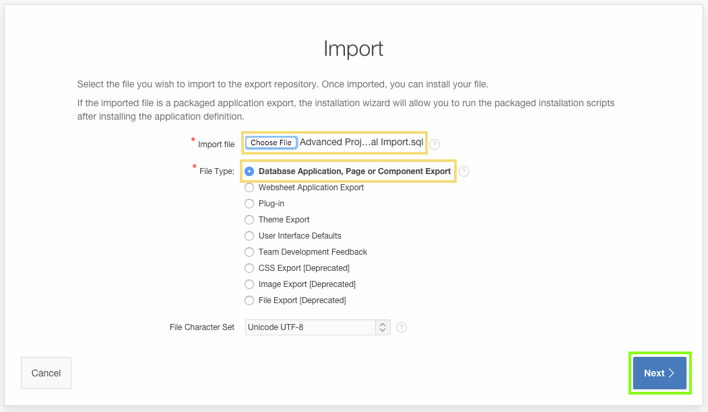
For the File Import Confirmation step, click Next.
For the Install step:
Parsing Schema - Verify the schema is correct
Build Status - verify the selection is Run and Build Application
Install As Applications - verify the selection is Auto Assign New Application Id
Click Install Application.
A box with Installing Application ... will be displayed for a short period (< 1 minute).
On the Supporting Objects step, verify the Install Supporting Objects is Yes.
Click Next. Note: If you already have the tables created and populated, then select No on this step.
For the Confirmation step, click Install.
A box with Installing Supporting Objects ... will be displayed for a short period (< 1 minute).
Once the application has been successfully installed, click Run Application.
The application log in screen is displayed.
Enter your username and password credentials that you use to log into the Application Builder.
Click Log In.
Click on the menu options and naviagate around the various reports and forms.
Given that you ran the application from the Application Builder, there is a Developer Toolbar at the bottom of the screen.
This toolbar allows developers to quickly navigate between runtime and various sections within the Application Builder. The Developer Toolbar also allows developers to initiate and view runtime debugging, show the HTML grid, and run the Theme Roller.
To return to the Application Builder for your application, click Application xxxx in the Develop Toolbar.
In this topic you imported the basic projects application, which also created the database objects and populated them with data.
3. Adding Application Components
In this topic, you add an error handling function and a corresponding table to hold user defined error messages. You also add authentication and improve the Navigation Bar.
When a database exception occurs an ORA-xxxx error message displays.
This error message is not very informative for end users.
To improve error handling you will create an Oracle Database function.
This function will replace generic Oracle Database error messages, such as ORA-0001 unique constraint (APEX_N00B.{table_name}) violated, with a user friendly message. These user friendly messages will be maintained in a table you create called DEMO_PROJECT_CONSTRAINT_LOOKUP.
Before updating the application to utilize the error handling procedure, run the application to see how the error messages are currently displayed.
If you are not currently in the runtime environment, from Application Builder click Run for the Demo Projects application.
if you have not previously run the application the application log in screen is displayed.
Enter your username and password credentials that you use to log into the Application Builder.
Click Log In.
In the runtime environment, click Projects.
In the Projects report, select Configure APEX Environment.
On the Maintain Project form, for Name enter Train Developers on Application Express, and click Save. Note: You can enter any existing project name to replicate this behavior.
Verify that the page displays 1 error has occurred ORA-0001 unique constraint (APEX_N00B.DEMO_PROJECTS_PK) violated.
Click Home in the Developer Toolbar.
Create the table to hold the user friendly error messages.
Use SQL Workshop > Object Browser to create a table.
From the Application Express Home Page, click SQL Workshop, and select Object Browser.
Click the Create ( + ) button, and select Table.
For Table Name enter DEMO_PROJECT_CONSTRAINT_LOOKUP.
For the table columns, enter the following:
For Column 1 -
Column Name - enter constraint_name
Type - select VARCHAR2
Scale - enter 30
Not Null - check
For Column 2 -
Column Name - enter message
Type - select VARCHAR2
Scale - enter 4000
Not Null - check
Click Next.
For Primary Key select Populated by Identity column.
For Primary Key (column) select CONSTRAINT_NAME (VARCHAR2).
Click Next.
On the Foreign Key step, click Next, as there are no foreign keys for this table.
On the Constraints step, click Next, as there are no constraints for this table.
Click SQL, to expand the SQL for creating the table.
Verify the SQL is the same as in the screen shot below.
Click Create Table.
The table is created, however, there are no records in the table.
In Object Browser, with the DEMO_PROJECT_CONSTRAINT_LOOKUP table selected, click Data.
Click Insert Row
Insert Row">
To insert a record, input the following:
Constraint Name - enter DEMO_TEAM_MEMBERS_UK Note: The constraint name entered into this table must exactly match the name of the constraint on the table, otherwise, the error message will not be displayed.
Message - enter Username must be unique
Click Create and Create Another.
Insert another record:
Constraint Name - enter DEMO_PROJECTS_UK
Message - enter Project Name must be unique
Click Create and Create Another.
Insert another record:
Constraint Name - enter DEMO_PROJECTS_STATUS_CHK
Message - enter Status can only be Assigned, In-Progress, or Completed
Click Create and Create Another.
Insert another record:
Constraint Name - enter DEMO_TASKS_UK
Message - enter Task Name must be unique within the same project
Click Create.
Rather than creating a function from scratch, you will upload a script to create the required function.
This function is copied from the Sample Database Application - Specifically from the package SAMPLE_PKG, and the function demo_error_handling within that package.
The function has been updated to retrieve the error messages from the DEMO_PROJECT_CONSTRAINT_LOOKUP table instead of the DEMO_CONSTRINT_LOOKUP table used by the Sample Database Application. In that way, if the Sample Database Application is uninstalled the error function will still work.
Use SQL Workshop to upload a script that creates the function.
Click the up arrow ( ↑ ), before Object Browser.
Click SQL Scripts.
Click Upload.
Click Choose File, where you extracted apex-adv-demo-projects-2848027.zip, open the files folder.
Locate the Demo_Project_Adv_Func.sql file, and double-click the file or click the file and then click Open.
Click Upload.
Click the Run icon to the right of the script you uploaded (top row).
Click Run In Background.
Click the View Results icon for the script you just ran.
At the bottom of the results page you should see "1" Statements Processed, "1" Successful, and "0" With Errors.
Now that the function and table are defined, update the application definition to utilize the error handling function.
From SQL Workshop > SQL Scripts, click Application Builder on the toolbar.
From the list of applications, select Demo Projects.
Click Edit Application Properties.
In the Edit Application Definition page, click the Error Handling tab.
For Error Handling Function enter DEMO_PROJECTS_ERROR_HANDLING (the name of the function you just created).
Click Apply Changes.
Run the application to see how the error messages are displayed now.
From Application Builder click Run Application.
In the runtime environment, click Projects.
In the Projects report, select Configure APEX Environment.
On the Maintain Project form, for Name enter Train Developers on Application Express, and click Save.
Verify that the page displays 1 error has occurred Project Name must be unique (go to error).
Click Application xxxx in the Developer Toolbar.
You use Shared Components to define various different types of objects in one place that can be used across an application.
As a best practice, Oracle recommends defining the code once in a shared component wherever possible and then reference that component on the different pages. Note: Some of the Shared Components, such as Authentication Schemes, Lists, Navigation Menu, and Themes, can only be defined as Shared Components, while others, such as List of Values, can also be implemented directly on individual pages.
In the Basic Demo Projects application three list of values were created for team members, projects, and milestones.
From the application home page, click Shared Components.
Application security is very important in the majority of applications, except for "Public" applications.
You must ensure users enter valid credentials, generally username and password (Authentication), and that once logged in that each user has appropriate rights within the application (Authorization).
Application Express provides a number of built-in Authentication Schemes, including Single Sign-On, LDAP, HTTP Header Based (for use with OAM / IDM), and Application Express Users.
For this exercise you will continue using the default configuration, which is Application Express users.
Application Express also makes it easy to define Authentication Schemes, that can be utilized to define access to almost every component within Application Express including pages, regions, items, report columns, buttons, and processes.
If you review the Packaged Apps, which are included within Application Express, you will see that the "productivty" applications include the ability to switch on authentication with access defined for Administrators, Contributors, and Readers. In these applications, only users defined as Administrators can access any of the administration pages. Further, Readers can not access the buttons for creating or updating any records in the application.
Create an authorization scheme to ensure only people entered as Team Members can log into the application.
Under Security, click Authorization Schemes.
Click Create.
Verify Create Authorization Scheme is From Scratch.
Click Next.
For Details, input the following:
Name - enter Team Members
Schema Type - select Exists SQL Query
SQL Query - copy and paste the following:
select 1
from demo_team_members
where upper(username) = upper(:APP_USER)
Identify error message displayed when scheme violated - enter You must be a team member to use this application.
Click Create Authorization Scheme. Note::APP_USER is a built-in application item that returns the username of the currently logged in user.
Rather than applying the authorization scheme to every page, apply the scheme to the application properties.
Click the Shared Components breadcrumb entry.
Alternatively, on the toolbar, click the Shared Components button, which is located in the top-right and contains a triangle, circle, and square in its icon.
Under Security, click Security Attributes.
Click the Authorization tab.
For Authorization scheme, select Team Members.
Click Apply Changes.
In order to test the authorization scheme it is necessary to create a new user account.
In the Application Express toolbar, click Administration, identified by a user icon with a spanner, then select Manage Users and Groups.
Click Create User.
To create a user, input the following:
Username - enter unauthorized
Email Address - enter unauthorized@email.com
Password - enter unauthorized
Confirm Password - enter unauthorized
Require Change of Password on First Use - No
Click Create User.
Navigate to the runtime environment (tab or window).
Click Logout in the navigation bar (top left).
On the Log In page, for Username enter unauthorized, and for Password enter unauthorized.
Click Log In.
Verify the access denied message is displayed.
Click OK.
On the Log In page, enter your username and password credentials that you use to log into the Application Builder.
Click Log In.
When you create an application, a Navigation Bar is created to allow entries to be placed on the top right of all pages (on the same line as the application name). The Navigation Bar is defined by a list.
Update the Navigation Bar list entries.
Navigate to the Application Express Builder (tab or window).
Under Navigation, click Lists.
In the report, click the Desktop Navigation Bar list.
Click Create List Entry.
To create a new list entry, input the following:
Image/Class - enter fa-user
List Entry Label - enter &APP_USER.
Target Type - select URL
URL Target - enter #
User Defined Attributes 2 (List Item CSS Classes) - enter has-username
Click Create List Entry.
Note: To determine the User Defined Attributes, click List Template Attributes.
For Theme select Universal Theme 42, and for List Template select Navigation Bar.
Verify that #A02# Description is List Item CSS Classes.
Note: For Image/Class you can click the up arrow at the end of the field ( ↑ ), to invoke the list of images.
Review the library of images, provided by Font Awesome (fa). These images can be utilized throughout the application to improve aesthetics, and provide a visual indicator, rather than just text.
In the Basic Demo Project application various images were added to the Navigation Menu.
Place the Logout entry under the new Application User entry.
In the report, click the Log Out list entry.
For Parent List Entry, select &APP_USER. .
Click Apply Changes.
The default login page is boring so you are going to spruce it up with a few quick updates.
Click Edit Page 1 on the toolbar.
About Page Designer
The Page Designer is a powerful IDE that includes a toolbar and multiple panes, used to maintain and enhance pages withiin Oracle Application Express applications.
The toolbar across the top of the page has a number of capabilities:
Page Selector - Displays the current page.
You can enter a page number directly, or click on the popup list of values to select a page.
Page Lock - Indicates if the page is unlocked (clear), locked by you (green), or locked by another developer (red).
By clicking on this icon you can lock or unlock the page, providing it is not locked by another developer.
Undo Changes - Click to undo the previous update you made within Page Designer.
Redo Changes - Click to reapply the last update that was undone using Undo Changes.
Create - Create new pages, regions, shared components, develop comments and team development entries.
Utilities - Perform a check, delete, export, or review the history for the current page.
You can also access the attribute dictionary, application utilities or upgrade the application.
Component View - Switch to the Component View for the current page.
Team Development - Show the Features, ToDos, Bugs and Feedback entries for this page.
You can also drill into filtered reports for each entry type.
Developer Comments - Drill into the developer comments entered for the current page.
You can also create new comments or delete comments from the modal window that is displayed.
Shared Components - Navigate to the Shared Components page.
Save - Save all changes you have made on the current page.
Save and Run Page - Save all changes and then run the current page.
Note: You will not be able to run modal and non-modal pages directly using Save and Run Page. Instead you will need to navigate to a normal page and run the page from there and then navigate within the running application to the modal or non-modal page.
Of these capabilities you will most often use Page Selector, Undo Changes, Shared Components, Save, and Save and Run Page.
There are three main panes within Page Designer:
Left Pane - Includes tabs for Rendering, Dynamic Actions, Processing, and Shared Components. Each tab displays a list of the corresponding component types and components created on the current page.
Right-click to access context sensitive menus. You can also drag components up and down within the trees to change the position or sequence of the selected component.
Central Pane - Includes tabs for Grid Layout, Messages, Page Search, and Help.
Grid Layout shows a visual representation of the page. You can add new components to a page by dragging them from the Gallery pane, at the bottom, and dropping them in Grid Layout.
Messages displays current errors and warnings. Clicking on a message changes the focus within Property Editor to the corresponding attribute associated with the error or warning.
Page Search enables you to search for any text within the current page.
Help displays attribute specific help. Click on the attribute name within Property Editor to see information and examples for that attribute.
Right Pane - Displays the Property Editor. Use the Property Editor to update attributes for the selected component(s).
When you select multiple components the Property Editor only displays common attributes. Updating a common attribute will update that attribute for all of the selected components.
You can change the size of each pane by selecting the dividers and sliding them left or right. Change the size of Grid Layout and Gallery by sliding the divider between them up and down.
You can access this information from the Application Builder.
In Page Designer, click Help, shown as a question mark on the toolbar, and then select Getting Started in Page Designer.
Within most panes there are also a number of useful icons, generally for manipulating the content displayed in that pane.
Of these, the icons within the Property Editor (right pane), will generally be utilized most often.
The Property Editor Icons include:
Show Common - Only the most used attributes, and non-common attributes that have non-default values, are displayed.
Show All - Displays all attributes.
Collapse All - Collapses all groups.
Expand All - Expands all groups.
Go to Group - Navigate to, and expand if necessary, the selected group.
You should try utilizing these icons in different scenarios, to determine the most effective and productive way to update attributes. Note: If you are having issues finding a specific attribute, click Ctrl + F to search the page for the required attribute name.
Page Designer also provides a number of keyboard shortcuts that can improve developer productivity.
Click Alt + Shift + F1, or click Help on the toolbar, and then select Shortcuts.
For example, using Go to Rendering (Alt + 1 on Windows / Option + 1 on Mac) and Go to Property Editor (Alt + 6 on Windows / Option + 6 on Mac) are useful for navigating between different page components, such as regions or items, and then updating attributes using only the keyboard, rather than having to move the mouse left to right and right to left continually.
You are currently on Page 1 and need to nvaigate to the Page 101 - Login Page.
In the Page Number field on the toolbar, enter 101 and click Go.
The right-hand pane is called the Property Editor. Use the Property Editor to edit attributes for the currently selected component(s).
In the Rendering tree, click the Log In region.
In the Property Editor:
Identification: Title - enter Demo Projects
Appearance: Template - select Login
Appearance: Icon CSS Classes - enter fa-folder
Note: Attributes within the Property Editor are organized into groups. The Property Editor bulleted lists specify Group: Attribute - Action to make it easier for you to locate the given attribute.
Within the Demo Projects region, under Items, click the P101_USERNAME item.
In the Property Editor:
Appearance: Template - select Hidden
Appearance: CSS Classes - enter icon-login-username
Appearance: Value Placeholder - enter username
In the Rendering tree, click the P101_PASSWORD item.
In the Property Editor:
Appearance: Template - select Hidden
Appearance: CSS Classes - enter icon-login-password
Appearance: Value Placeholder - enter password
In the Rendering tree, under Region Buttons, click the LOGIN button.
For Identification: Button Position, select Next.
Click Save.
Click Save and Run Page.
Enter your username and password credentials that you use to log into the Application Builder.
Verify your username is displayed, and that the Logout link is accessed by clicking on your username.
In this topic you improved the error handling, security, navigation bar, and the log in page.
4. Updating the Home Page
In this topic, you create a dashboard by adding new components to the Home page of the application.
Note: If you have not completed the previous topic, import the Advanced Demo Projects App Export - Topic 3.sql file into your workspace to continue working from this topic forward. You can find the export file in the /files subdirectory where you unzipped the original file. See Appendix A - Importing an Application.
Within Application Express you can utilize plug-ins, which are custom components used to extend native functionality. The most common plug-ins are custom item types, and custom regions.
The Application Express Development Team provides a number of plug-ins that you can readily utilize within your own application, by either importing it into your application, or subscribing to another application which has the plug-in installed. To access the Development Team plug-ins you can install the Packaged Apps, especially applications such as Sample Charts, or go to http://apex.oracle.com/plugins.
There are also over 150 plug-ins developed by the Application Express community which you can utilize. To review the community developed plug-ins go to http://apex.world > Plug-Ins or http://www.apex-plugin.com/
Install the Sample Charts application so that you can subscribe to the badge list and D3 chart plug-ins.
In the main toolbar, click Packaged Apps and select Apps Gallery.
Locate the Sample Charts application. Click the Sample Charts application.
Click Install Application.
On the Install Packaged Application page, click Next.
Click Install Application.
A box with Installing Application ... will be displayed for a short period (< 2 minutes).
Note: Unlike "productivity" Packaged Apps, the "sample" apps are unlocked by default. As such these applications do not need to be unlocked in order to edit the application.
Add the required plug-ins, from the Sample Charts application, into your application.
Click Application Builder.
On the Application Builder home page, click the Demo Projects application.
Click Shared Components.
Under Other Components, click Plug-ins.
Click Create.
For Create Plug-In, select As a Copy of an Existing Plug-in, and click Next.
Select xxxx Sample Charts, and click Next.
At the bottom of the page, click Deselect All.
Locate the Copy? column:
Badge List - select Copy and Subscribe.
D3 Bar Chart - select Copy and Subscribe.
Click Copy Plug-ins.
On the toolbar, click Edit Page 1, to navigate to Page Designer for Page 1 - Home Page. Note: If you are not on Page 1, enter 1 into the Page Selector on the toolbar, and click Go.
Add additional regions to Page 1, starting with the badge list component.
Page Designer includes the Grid Layout in the cenral pane. The Grid Layout is a representation of how the components will be positioned on the page.
Existing regions, items, and buttons can be moved relative to other components by simply clicking on the component and dragging it to a new location.
For example, items can be placed next to each other by dragging the second item to the end of the first item, and dropping it in the yellow box that appears when you hover in the desired location.
New components can quickly be added to an existing page by dragging the component from the Gallery up to the desired position within the Grid Layout.
Use Page Designer's drag-and-drop functionality to quickly add a Badge List from the Gallery to the Grid Layout.
In Page Designer, within the Gallery (directly below the Grid Layout), click Regions, and locate Badge List.
Click and hold Badge List [Plug-In] and drag it into Content Body, to a position directly above the Project Tasks region.
It should appear as a darkened tile before you drop it into place. Note: When you drag the region up, and hover over the small yellow section, below Content Body, the yellow section will expand.
A darker yellow section, with a black box around it, will indicate where the region will be placed.
In the Property Editor:
Identification: Title - enter Summary
Source: SQL Query - copy and paste the following:
select 'Open Projects' label
, count(*) value
, 'f?p='||:APP_ID||':4:'||:APP_SESSION||':::::' link
from demo_projects
where status != 'Completed'
UNION ALL
select 'Upcoming Milestones' label
, count(*) value
, 'f?p='||:APP_ID||':4:'||:APP_SESSION||':::::' link
from demo_milestones
where due_date > sysdate
UNION ALL
select 'Open Tasks' label
, count(*) value
, 'f?p='||:APP_ID||':4:'||:APP_SESSION||':::::' link
from demo_tasks
where is_complete_yn = 'N'
Note: This query has three sub-queries, separated by UNION ALL, that will be displayed as three separate badges within the region.
In the Property Editor, click the Template Options button (Use Template Defaults, Scroll - Default) and input the following:
General - enable Remove Body Padding
Header - select Hidden but accessible
Click OK. Note: The Template Options button display changes in the Property Editor to reflect its current settings.
In the Rendering tree, under the Summary region, click Attributes.
In the Property Editor:
Settings: Label Column - select LABEL
Settings: Value Column - select VALUE
Click the Link Builder button (No Link Defined) and input the following:
Type - select URL
URL - enter &LINK. Warning: When you enter &LINK. ensure you include the period.
Click OK. Note: the Link Builder button display changes in the Property Editor to reflect its current settings.
In Page Designer, click Save.
The application already has a Project Tasks region, however, this was created using the standard AnyCharts region type.
Instead the region should be replaced by a D3 Bar Chart to improve the look and responsiveness of the chart.
In the Rendering tree, click the Project Tasks region.
In the Property Editor:
Identification: Type - select D3 Bar Chart [Plug-In]
Source: SQL Query - copy and paste the following:
select p.id
, p.name as label
, (select count('x') from demo_tasks t
where p.id = t.project_id
and nvl(t.is_complete_yn,'N') = 'Y'
) value
, 'Completed Tasks' series
, p.created
from demo_projects p
UNION ALL
select p.id
, p.name as label
, (select count('x') from demo_tasks t
where p.id = t.project_id
and nvl(t.is_complete_yn,'N') = 'N'
) value
, 'Incomplete Tasks' series
, p.created
from demo_projects p
order by 5
Note: The D3 Bar chart will use two series: Completed Tasks and Incomplete Tasks. The query uses two select statements (with different where conditions), joined using UNION ALL, to count the tasks for each project.
Click Template Options.
For Body Height, select Auto - Default.
Click OK.
In the Rendering tree, under the Project Tasks region, click Attributes.
In the Property Editor:
Settings: X Values Column - select LABEL
Settings: Y Values Column - select VALUE
Settings: Display - select Horizontal, Stacked
Settings: Multiple Series - enable
Settings: Series Column - select SERIES
Settings: Y-Axis Title - enter Tasks
Settings: Tooltips - enable Show series name and Show Y value
Settings: Legend - select Below chart
Settings: Show Grid Lines - enable Y-Axis
Settings: Maximum Height - enter 240
Settings: Color Scheme - select Theme Default
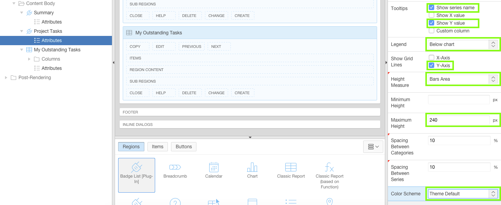
Click Save.
The last region to add to the Home page is a stylized classic report. It needs specific column names that are used by the Timeline region template.
In the Rendering tree, right-click My Outstanding Tasks region and select Duplicate.
In the Property Editor:
Identification: Title - enter Recent Projects
Source: SQL Query - remove the current code, then copy and paste the following:
select p.id project_id
, t.id
, null event_modifiers
, null event_attributes
, null user_color
, dbms_lob.getlength('PHOTO_BLOB') user_avatar
, t.full_name user_name
, nvl(p.completed_date, p.updated) event_date
, (case p.status
when 'Assigned' then 'is-removed'
when 'In-Progress' then 'is-updated'
when 'Completed' then 'is-new'
end) event_status
, p.status event_type
, (case p.status
when 'Assigned' then 'fa fa-clock-o'
when 'In-Progress' then 'fa fa-refresh'
when 'Completed' then 'fa fa-check'
end) event_icon
, p.name event_title
, p.description event_desc
from demo_projects p
, demo_team_members t
where p.project_lead = t.id
order by p.updated desc
Note: The columns in this query use specific column names that are required in order to match those specified in the Timeline template.
In the Property Editor, for Grid: Start New Row, select No. Note: Once you select "No" the position of the Recent Projects region moves next to the My Outstanding Tasks region in the Grid Layout.
In the Rendering tree, under the Recent Projects region, click Attributes.
In the Property Editor:
Layout: Number of Rows - enter 5
Appearance: Template - select Timeline
Pagination: Type - select No Pagination (Show All Rows)
Click the Template Options button.
For Style select Compact, and click OK.
Note: There are significant differences between the Region template options, set in the previous step, and the Attribute template options set above. The region settings are used to modify how the region is displayed, whereas, attribute settings (where available) modify how the contents of the region are displayed.
Update the columns for this region to display an image and change the format mask of selected items.
In the Rendering tree, under the Recent Projects region, expand the Columns folder.
Click the USER_AVATAR column.
In the Property Editor:
Identification: Type - select Display Image
BLOB Attributes: Table Name - select DEMO_TEAM_MEMBERS
BLOB Attributes: Blob Column - select PHOTO_BLOB
BLOB Attributes: Primary Key Column 1 - select ID
BLOB Attributes: Mime Type Column - select PHOTO_MIMETYPE
BLOB Attributes: Last Updated Column - select PHOTO_LAST_UPDATED
Click the EVENT_DATE column, and for Appearance: Format Mask enter SINCE.
Click Save.
Run the application to see how the Home page looks now.
The Home page is now complete!
5. Updating the Team Member Pages
In this topic, update the Team Member pages by replacing the Interactive Report with a card region. This will provide a directory of your team members' contact info and roles as though you had a stack of their business cards at hand.
Note: If you have not completed the previous topic, import the Advanced Demo Projects App Export - Topic 4.sql file into your workspace to continue working from this topic forward. You can find the export file in the /files subdirectory where you unzipped the original file. See Appendix A - Importing an Application.
Click on the Page Finder on the toolbar and click 2 to navigate to Page 2 - Team Members.
Update the page properties from Demo Team Members to Team Members.
In the Property Editor, with the page selected, for CSS - Inline, copy and paste the following code:
.t-Card-icon img {
width: 48px;
height: 48px;
}
Note: This CSS ensures that the images are all the same size (48 pixels) irrespective of the size of the image uploaded.
Interactive Reports are the default report type when generating report pages from the Create Application Wizard.
However, for this page we want to convert the report type to a Classic Report type, so that we can utilize one of the built-in templates.
Update the Interactive Report to a Classic Report, and apply the Cards template to display the team members in a more visually pleasing manner.
Click the DEMO_TEAM_MEMBERS region and input the following:
Identification: Title - enter Team Members
Identification: Type - select Classic Report
In the SQL Query attribute, click the Code Editor button.
In the Code Editor window, delete the existing SQL Query and copy and paste the following code:
select id
, full_name card_title
, profile card_text
, nvl(email,' ') card_subtext
, dbms_lob.getlength('PHOTO_BLOB') card_initials
, apex_util.prepare_url('f?p='||:APP_ID||':3:'||:APP_SESSION||'::::P3_ID:'||id) card_link
, photo_filename
, photo_mimetype
, photo_charset
, photo_last_updated
from demo_team_members
order by created
Note: This SQL query uses specific column names, such as card_title, which correspond to the columns required for the Card template.
Click OK.
The report region has the required Type and SQL Source, now the report needs to be enhanced to display an image and utilize the correct report template.
The DEMO_TEAM_MEMBERS table includes columns which store an image and the image's associated properties.
You can use this information to show the team Member's stored image, instead of the member's initials in the cards report.
Locate the Rendering tree. Under Team Members, expand the Columns folder, click the CARD_INITIALS item, and input the following:
Identification: Type - select Display Image
BLOB Attributes: Table Name - select DEMO_TEAM_MEMBERS
BLOB Attributes: BLOB Column - select PHOTO_BLOB
BLOB Attributes: Primary Key Column 1 - select ID
BLOB Attributes: Mime Type Column - select PHOTO_MIMETYPE
BLOB Attributes: Last Updated Column - select PHOTO_LAST_UPDATED
Locate the Rendering tree. Under Team Members, click Attributes, and input the following:
Appearance: Template - select Cards
Click the Template Options button and select the following:
Style - select Basic
Icons - select Display Initials
Layout - select 4 Columns
Body Text - select 3 Lines
Click OK.
Click Save and Run Page to see the new cards.
The Maintain Team Members page was enhanced in the Basic Demo Project workshop. Therefore, the Team Member pages are now complete.
6. Updating the Project Pages
In this topic, a new project master-details page will be created to show the project details, for a selected project, together with all of the child records for that project. Once complete this will be the most used page within the application, as users will be able to not only view project details, but also maintain Milestones, and Tasks.
Note: If you have not completed the previous topic, import the Advanced Demo Projects App Export - Topic 5.sql file into your workspace to continue working from this topic forward. You can find the export file in the /files subdirectory where you unzipped the original file. See Appendix A - Importing an Application.
Create the Projects master-detail page.
A master-detail page is simply a specific page template, which includes region positions for the master and detail regions, together with a right-side display position.
Such page layouts are commonly used within the Packaged Apps as such pages provide large amounts of data in a single page layout, in a very simple and intuitive design, that is easy for end users to utilize.
Navigate to Page Designer. On the toolbar at the top of the screen, click the Create button, which is a plus sign ( + ). Select Page.
Note: Review the Page Number listed as this will be the page number generated. Once generated the page number can not be updated. This value should be 11.
Click Next.
Instead of creating a new entry in the navigation menu, add to the pre-existing Projects list entry:
Navigation Preference - select Identify an existing navigation menu entry for this page
Existing Navigation Menu Entry - select Projects
Click Next.
For Source Type, select SQL Query, and copy and paste the following into SQL Query:
select p.description
, (select full_name from demo_team_members tm where tm.id = p.project_lead) project_lead
, p.completed_date
, p.status
, p.created
, p.updated last_updated
from demo_projects p
where p.id = :P11_PROJECT_ID
Click Next.
Note: This SQL Query limits the project using :P11_PROJECT_ID in the where condition.
This page item will be created on this page, after the page has been generated.
When creating a page item the name should always start with the page number, such as P11_xxx, to ensure every item has a unique name, and to make it easier for application maintenance.
In an earlier step of this wizard, Page Attributes, the Page Number was specified as 11, therefore, in the SQL Source we have specified :P11_PROJECT_ID.
For Report Attributes, select the following:
Column Heading Sorting - select No
CSV Output - select No
Click Next.
On the Confirmation Page, click Create.
Configure the Master Detail page properties.
In the Property Editor:
Appearance: Page Template - select Master Detail
Configure the Master Project region.
In the Rendering tree, click Master Project.
In the Property Editor:
Layout: Position - select Master Detail
Appearance: Template - select Blank with Attributes
In the Rendering tree, under Master Project, click Attributes.
In the Property Editor:
Pagination: Type - select No Pagination (Show All Records).
Add hidden items required to drive this page.
In the Rendering tree, right-click the Master Project region and select Create Page Item.
In the Property Editor:
Identification: Name - enter P11_PROJECT_ID
Identification: Type - select Hidden
Note: This page item name must correspond to the item specified in the where condition for the Master Project SQL Source.
In the Rendering tree, under Master Project, right-click the P11_PROJECT_ID item and select Duplicate.
In the Property Editor:
Identification: Name - enter P11_PROJECT_NAME
Define a computation to populate the Project Name item. This item will be used in the breadcrumb for the page, so that it dynamically displays the currently selected project.
In the Rendering tree, expand the Pre-Rendering folder. Right-click After Header and select Create Computation.
In the Property Editor:
Identification: Item Name - select P11_PROJECT_NAME
Computation: SQL Query - copy and paste the following code:
select name
from demo_projects
where id = :P11_PROJECT_ID
Click Save.
Instead of a static breadcrumb, update it to use the Project Name.
In the Rendering tree, click the Shared Components tab. Expand the Breadcrumbs folder, and click Breadcrumb. In the Property Editor, click the Edit Component button.
Note: If a dialog window is displayed called Confirm Navigation, or similar as the exact message varies between browsers, you have not saved the previous changes.
Click Stay on this Page in the dialog window.
Click Save on the toolbar, and then click the Edit Component button again.
Click the Project Details breadcrumb entry.
For Short Name, enter &P11_PROJECT_NAME. and click Apply Changes.
Warning: When entering &P11_PROJECT_NAME. ensure you include the period after the item name.
Note: When referencing page items within SQL Source or PL/SQL Expression you need to use the :P[page_number]_[item_name] syntax.
However, when specifying page items elsewhere, such as in breadcrumbs or links, where they are not part of SQL, you need to use the &P[page_number]_[item_name]. syntax.
Modify the existing Projects page (Page 4) to link to the Project Details page (Page 11).
In the Application Builder breadcrumbs to the top-left, click Application #### (your application ID, such as Application 55572).
Click 4 - Projects.
In the Rendering tree, under the Content Body region, expand DEMO_PROJECTS.
Expand the Columns folder and click Name.
In the Property Editor, click the Link Builder button (Page 5) and input the following:
Page - enter 11
Name - select P11_PROJECT_ID
Value - select #ID#
Clear Cache - enter 11
Click OK. Note: the Link Builder button display changes in the Property Editor to reflect its current configuration.
Click Save and Run Page on the toolbar.
Test the revised link by clicking on a project name to verify that it goes to Project Details (Page 11) and displays the selected project.
Time to enhance the Project Details page and add multiple regions for the detail records.
Add the Region Display Selector region to Page 11.
On the Developer Toolbar, click Edit Page 11.
In the Gallery, locate Region Display Selector.
Click and hold Region Display Selector and drag it to the bottom of the Master Project region. It should appear as a long, shaded row in the Master Detail placeholder before you drop it into place.
In the Property Editor:
Identification: Title - enter Region Display Selector
Appearance: Template - select Blank with Attributes
Add the Milestones report region to Page 11.
In the Gallery, locate Classic Report.
Click and hold Classic Report and drag it up into the Content Body section. It should appear as a square tile before you drop it into place.
In the Property Editor:
Identification: Title - enter Milestones
Source: SQL Query - copy and paste the following code:
select m.id
, m.name
, m.description
, m.due_date
from demo_milestones m
where project_id = :P11_PROJECT_ID
order by due_date desc, updated
Advanced: Static ID - enter milestones
Note: Each of the regions and buttons that you will be adding will be given a unique Static ID. These will be used in a later topic when defining Dynamic Actions that utilize these values.
Click the Template Options button and input the following:
Remove Body Padding - enable
Click OK.
Update the columns and attributes for the Milestones region.
In the Rendering tree, under Content Body, expand the Milestones node.
Expand the Columns folder. Click ID.
In the Property Editor:
Identification: Type - select Link
Heading: Heading - delete any text to clear the field
Click the Link Builder button (No Link Defined).
In the Link Builder window, input the following:
Page - enter 7
Name - select P7_ID
Value - select #ID#
Clear Cache - enter 7
Click OK.
In Link Text, click the Quick Pick button (its icon looks like a bulleted list). Select apex-edit-pencil.png.
In the Rendering tree, under Milestones, click Attributes.
In the Property Editor:
Pagination: Type - select No Pagination (Show All Rows)
Messages: When No Data Found - enter No Milestones
In the Property Editor, click the Template Options button.
In the Template Options window, input the following:
Stretch Report - enable
Report Border - select No Outer Borders
Click OK.
Add a button that users can use to add milestone records.
In the Gallery, click the Buttons tab.
Click and hold Icon, drag it to the Milestones region, and place it in the Edit placeholder.
In the Property Editor:
Identification: Button Name - enter ADD_MILESTONE
Identification: Label - enter Add milestone
Appearance: Icon CSS Classes - select fa-plus
Behavior: Action - select Redirect to Page in this Application
Advanced: Static ID - enter add-milestone
Click the Template Options button.
For Style, select Remove UI Decoration and click OK.
Click the Link Builder button (No Link Defined).
In the Link Builder, input the following:
Page - enter 7
Name - select P7_PROJECT_ID
Value - select &P11_PROJECT_ID.
Clear Cache - enter 7
Click OK. Note: In this link the P11_PROJECT_ID is sent to Page 7 as the new milestone will be created for the currently selected project.
Add a second button that goes to the Milestones page (page 6) and displays all of the milestones for the current project.
In the Rendering tree, right click the ADD_MILESTONE button and select Duplicate.
In the Property Editor:
Identification: Button Name - enter VIEW_MILESTONES
Identification: Label - enter View milestones
Appearance: Icon CSS Class - enter fa-chevron-right
Advanced: Static ID - delete any text to clear the field
In Behavior: Target, click the Link Builder button (currently Page 7).
In the Link Builder, input the following:
Page - enter 6
Name - enter IR_PROJECT_ID
Value - select P11_PROJECT_NAME Note: The Interactive Report on Page 6 displays the Project Name and not the Project ID, as it is defined as Plain Text (based on List of Values).
Therefore, you must pass the project name for the report to find the matching project records.
Clear Cache - enter 6,RIR,CIR Note: RIR will refresh the Interactive Report, and CIR will clear the report.
Including both clear cache parameters will ensure the page is displayed correctly and only lists milestones for the current project.
Click OK.
Duplicate the Milestones region and update it to create the Tasks region. Given the similarities between the regions, duplicating the existing region will save numerous steps.
In the Rendering tree, right-click the Milestones region and select Duplicate.
In the Property Editor:
Identification: Title - enter Tasks
Source: SQL Query - copy and paste the following code:
select t.id
, t.name
, t.description
, decode(nvl(t.is_complete_yn,'N'),
'N','<span class="u-VisuallyHidden">No</span>',
'Y','<span class="fa fa-check"><span class="u-VisuallyHidden">Yes</span></span>'
) completed
, (select m.name from demo_milestones m where m.id = t.milestone_id) milestone
, (select tm.full_name from demo_team_members tm where tm.id = t.assignee) assignee
, t.start_date
, t.end_date
from demo_tasks t
where t.project_id = :P11_PROJECT_ID
order by nvl(t.end_date, sysdate) desc
Advanced: Static ID - enter tasks
In the Rendering tree, expand the Columns folder.
Select ID, and click the Link Builder button (Page 7).
In the Link Builder window, input the following:
Page - enter 9
Name - select P9_ID
Clear Cache - enter 9
Click OK.
In the Columns folder, select COMPLETED
In the Property Editor:
Layout: Column Alignment - select center
Security: Escape special characters - click No
In the Rendering tree, under the Tasks region, select Attributes.
For When No Data Found, enter No Tasks.
Update the add button associated with the Tasks region.
Click the ADD_MILESTONE_1 button. In the Property Editor:
Identification: Button Name - enter ADD_TASK
Identification: Label - enter Add task
Layout: Button Position - select Edit
Advanced: Static ID - enter add-task
In Behavior: Target, click the Link Builder button (currently Page 7).
In the Link Builder, input the following:
Page - enter 9
Name - select P9_PROJECT_ID
Clear Cache - enter 9
Click OK.
Update the view button associated with the Tasks region.
Click the VIEW_MILESTONES_1 button. In the Property Editor:
Identification: Button Name - enter VIEW_TASKS
Identification: Label - enter View tasks
Layout: Button Position - select Edit
In Behavior: Target, click the Link Builder button (currently Page 6).
In the Link Builder, input the following:
Page - enter 8
Clear Cache - enter 8,RIR,CIR
Click OK.
Click Save and Run Page to see the improved Project Details page.
The right-side column on the page is currently empty. This column is useful for listing user actions and displaying summary information.
Add a list to allow end users to add child records.
From the application runtime window, click Application xxxx, to return to the application home page.
Click Shared Components.
Under Navigation, click Lists.
Click Create.
For Create List - select From Scratch (default) and click Next.
For Name - enter Project Actions, and click Next.
Enter the following to the List Entry Label and Target Page ID columns:
Add Milestone / 7
Add Task / 9
Click Next.
Click Create List.
Configure each list entry (Add Milestone, and Add Task).
Click Project Actions.
Click Add Milestone.
For the Add Milestone list entry, input the following:
Image/Class - enter fa-flag
Clear Cache - enter 7
Set these items - enter P7_PROJECT_ID
With these values - enter &P11_PROJECT_ID.
Click the right arrow ( > ) in the toolbar, to navigate to the next list entry.
For the Add Task list entry, input the following:
Image/Class - enter fa-check-square-o
Clear Cache - enter 9
Set these items - enter P9_PROJECT_ID
With these values - enter &P11_PROJECT_ID.
Click Apply Changes.
Add the list to the right-side column of the Project Details page.
In the toolbar, click Edit Page 11, to return to Page Designer.
In the Gallery, click the Regions tab, and locate List. Click and hold List and drag it into the Right Side Column placeholder.
In the Property Editor:
Identification: Title - enter Project Actions
Source: List - select Project Actions
Appearance: Template - select Blank with Attributes
Advanced: Static ID - enter actions
Advanced: Region Display Selector - select No
In the Rendering tree, under Project Actions select Attributes.
In the Property editor, click the Template Options button (Use Template Defaults).
In Template Options, select the following:
Style - select Actions
Display Icons - select For All Items
Click OK.
Add a button to Page 11 to allow you to edit the Project. This button will link to Maintain Project (Page 5) that previously linked to the Projects Interactive Report.
In the Gallery, click the Buttons tab and locate Text [Hot]. Click and hold Text [Hot] and drag it to the Breadcrumb region and into the Edit placeholder.
In the Property Editor:
Identification: Title - enter EDIT_PROJECT
Identification: Label - enter Edit Project
Behavior: Action - select Redirect to Page in this Application
Click the Link Builder button (No Link Defined).
Click the Link Builder, currently No Link Defined.
Input the following:
Page - enter 5
Name - select P5_ID
Value - select &P11_PROJECT_ID.
Clear Cache - enter 5
Click OK. Note: This link is to the orioginal project form page generated in the Create Application Wizard, which was previously called from the Projects report page (Page 4).
Add another button to Page 11 to allow you to return to Projects (Page 4).
In the Gallery, click and hold Icon and drag it to the Breadcrumb region and into the Change placeholder.
In the Property Editor:
Identification: Title - enter CANCEL
Appearance: Icon CSS Classes - enter fa-chevron-left
Behavior: Action - select Redirect to Page in this Application
Click the Link Builder button (No Link Defined).
Click the Link Builder, currently No Link Defined.
Input the following:
Page - enter 4
\
Click OK.
Click Save and Run Page on the toolbar. The Master-Detail page shows a substantial amount of information in a single page.
7. Adding Dynamic Actions
In this topic, add dynamic actions to the Project Details (master-detail) page and convert Maintain Task to a modal page.
Note: If you have not completed the previous topic, import the Advanced Demo Projects App Export - Topic 6.sql file into your workspace to continue working from this topic forward. You can find the export file in the /files subdirectory where you unzipped the original file. See Appendix A - Importing an Application.
In the runtime environment, from Project Details (Page 11), perform the following tasks:
Click Edit Project. Edit project details, such as Description, Project Lead, and so forth, and then click Save. Expected Result: The Maintain Project page appears as a modal page, with the current project details populated.
After hitting Save you are returned to the Project Details page but the updated project details are not shown.
Click the plus button ( + ) in the Milestones region. Then add a milestone record and click Create. Expected Result: The Maintain Milestone page appears as a modal page, with the project poulated.
After hitting Create you are returned to the Project Details page but the new milestone is not shown.
Click the right arrow button ( > ) in the Milestones region. Then click on the Projects menu option and select the same Project. Expected Result: The Milestones Interactive Report will display the record you just created.
Upon returning to the Project Details page the updated project details and new milestone are displayed.
Click the plus button ( + ) in the Tasks region. Then add a task record and click Create. Expected Result: The Maintain Task page appears as a normal page, with the project populated.
After hitting Create you are returned to the Tasks Interactive Report page, rather than the Project Details page.
As can be seen by performing the above tasks, the details are being saved to the database, however, Project Details (Page 11) is not displaying the changes made until you exit and reenter the page. Adding Dynamic Actions to the page will ensure changes made on modal pages are reflected on the page, as soon as the modal page is closed.
Furthermore, Maintain Task (Page 9) needs to have navigation improved to return to the page it was called from. One alternative is to define a hidden item on the page and populate that item with the calling page. Then use the hidden item in the Cancel button and Branch processing to return to the correct page.
Instead you will convert the page to a modal page.
Transforming the page mode from normal to modal is not complex, but requires a few steps to ensure the page operates correctly.
In the runtime environment, navigate to Maintain Task. Click Edit Page 9 in the Developer Toolbar.
In the Property Editor:
Appearance: Page Mode - select Modal Dialog
Create a buttons region in the dialog footer, so that the buttons are always dispalyed at the bottom of the modal page.
In the Rendering tree, right-click Dialog Footer, and select Create Region.
For the new region, in the Property Editor:
Identification: Name - enter Buttons
Appearance: Template - select Buttons Container
In the Grid Layout, click each button and move it to into the Buttons region.
CANCEL - drag to the Previous placeholder
DELETE - drag to the Delete placeholder
SAVE - drag to the Create placeholder
CREATE - drag to the Create placeholder, after the SAVE button.
Change the behavior of the Cancel button, from branching to Page 8, to utilizing a dynamic action.
In the Rendering tree, under Dialog Footer, click CANCEL.
In the Property Editor:
Behavior: Action - select Defined by Dynamic Action
Behavior: Execute Validations - select No
Create a dynamic action to close the modal page when the Cancel button is pressed.
In the Rendering tree, right-click the CANCEL button, and select Create Dynamic Action
For the new Dynamic Action, in the Property Editor:
Identification: Name - enter Cancel Dialog
In the Rendering tree, under the CANCEL button, click the action within the True folder (currenly labeled X Show).
In the Property Editor:
Identification: Action - select Cancel Dialog
Update the page processing, removing the current branch and creating a close dialog process.
In the left pane, click the Processing tab (its icon is a rectangle with inline arrows top and bottom).
In the Processing tree, right-click the Go to Page 8 branch, and select Delete (Del).
In the Processing tree, right-click Processes, and select Create Process.
For the new Process, in the Property Editor:
Identification: Name - enter Close Dialog
Identification: Type - select Close Dialog
Click Save.
The final improvement to Maintain Task is to remove the breadcrumb region.
In the left pane, click the Rendering tab (its icon is a hierarchical tree).
In the Rendering tree, right-click the Breadcrumbs region, and select Delete (Del).
In the runtime environment, perform the following tasks:
Navigate to Tasks (using the navigation menu). Select a Task, and click Cancel. Expected Result: From Maintain Task (Page 9), clicking Cancel returns to Tasks (Page 8).
Select a Task, edit some items and and click Save. Expected Result: From Maintain Task (Page 9), clicking Save returns to Tasks (Page 8).
Navigate to Projects (using the navigation menu). Select a Project, edit a Task, then click Cancel. Expected Result: From Maintain Task (Page 9), clicking Cancel returns to Project Details (Page 11).
Select a Task, edit some items and and click Save. Expected Result: From Maintain Task (Page 9), clicking Save returns to Project Details (Page 11).
The Maintain Task page is now operating correctly as a modal page.
Dynamic Actions within Application Express are used to declaratively define client-side behaviors without needing to write JavaScript or AJAX.
Instead the Application Express engine implements the necessary code, based on your declaration.
In the first lab you defined a dynamic action to show or hide an item based on the value of a previous item. In this topic you will create more complex dynamic actions that fire based on the Edit Project button or jQuery selectors to refresh the page or specific regions. These dynamic actions ensure that this page reflects changes made on any of the modal pages, called from this page, as soon as the user returns from the modal page.
Add a dynamic action for updates to the project.
In Page Designer, navigate to Page 11.
In the left pane, click the Dynamic Actions tab (its icon is a lightning bolt).
Right-click the Dialog Closed folder, and select Create Dynamic Action.
For the new Dynamic Action, in the Property Editor:
Name - enter Project Updates
Selection Type - select Button
Button - select EDIT_PROJECT
In the Dynamic Actions tree, under Project Updates, click the action within the True folder (currently labeled X Refresh).
In the Property Editor:
Identification: Action - select Submit Page
Note: The Submit Page action refreshes the whole page. This action is required to ensure the breadcrumb is recomputed for the use case where the Project Name was updated when the user edited the project and then returned to this page.
Add a dynamic action for updates made on the Maintain Milestone modal page.
In the Dynamic Actions tree, right-click the Dialog Closed folder and select Create Dynamic Action.
In the Property Editor:
Name - enter Milestone Updates
Selection Type - select jQuery Selector
jQuery Selector - enter #milestones, #add-milestone, #actions
Condition - select JavaScript Expression
JavaScript Expression - enter this.data && this.data.dialogPageId == "7"
Note: For this dynamic action we need to use a Selection Type of jQuery Selector because the user can edit an existing milestone (Static ID = milestones), add a milestone by clicking the + button above the Milestones region(Static ID = add-milestone), or clicking the Add Milestone entry in the Project Actions list (Static Id = actions). Because the Static Id is assigned to the Project Actions region and not individual list entries, the #actions is invoked by adding a milestone, or task. Therefore, the dynamic action uses Condition Type JavaScript Expression to ensure that this dynamic action only fires when returning from Maintain Milestone (Page 7), and not from Maintain Task (Page 9).
In the Dynamic Actions tree, under Milestone Updates, click the action within the True folder (currently labeled X Refresh)
In the Property Editor:
Affected Elements: Region - select Milestones
Add a dynamic action for updates to the tasks.
In the Dynamic Actions pane, right-click the Dialog Closed folder, and select Create Dynamic Action.
In the Property Editor:
Name - enter Task Updates
Selection Type - select jQuery Selector
jQuery Selector - enter #tasks, #add-task, #actions
Condition - select JavaScript Expression
JavaScript Expression - enter this.data && this.data.dialogPageId == "9"
In the Dynamic Actions tree, under Task Updates, click the action within the True folder (currently labeled X Refresh)
In the Property Editor:
Affected Elements: Region - select Tasks
Click the Save and Run Page button on the toolbar. Try updating project details and inserting, updating, and deleting related detail records to ensure the Project Details page refreshes immediately with the latest data.
8. Updating the Calendar Page
In this topic, improve the Calendar by adding a filter region. Also replace the existing Calendar query with a complex SQL which shows various colors for different statuses.
Note: If you have not completed the previous topic, import the Advanced Demo Projects App Export - Topic 7.sql file into your workspace to continue working from this topic forward. You can find the export file in the /files subdirectory where you unzipped the original file. See Appendix A - Importing an Application.
Before updating the SQL query for the Calendar region, install a package which contains three functions.
These functions will return a CSS color and an icon for projects, milestones, and tasks, which can then be utilized in the calendar.
In the Application Builder Toolbar, click the down arrow next to SQL Workshop ( ↓ ), then select SQL Scripts.
Click Upload.
Click Choose File, where you extracted apex-adv-demo-projects-2488027.zip, open the files folder.
Locate the Demo_Project_Adv_Pkg.sql file, and double-click the file or click the file and then click Open.
Click Upload.
Click the Run icon to the right of the script you uploaded (top row).
Click Run in Background.
Click the View Results icon for the script you just ran.
At the bottom of the results page you should see "2" Statements Processed, "2" Successful, and "0" With Errors.
Add a region to the calendar that contains filter controls to make the page easier for end users to use.
In the Application Builder, navigate to Page 10 - Calendar of your application.
In the Rendering tree, right-click the Content Body folder and select Create Region.
In the Property Editor:
Title - enter Filter Bar
Template - select Buttons Container
In the Rendering tree, click and hold Filter Bar and drag it above Calendar.
Create the filter items.
In the Gallery, click the Items tab.
Click and hold Select List and drag it to the Filter Bar region and drop it into the Items placeholder.
In the Property Editor:
Identification: Name - enter P10_PROJECT_ID
Label: Label - enter Project
List of Values: Type - select Shared Component
List of Values: List of Values - select PROJECTS
List of Values: List of Values: Display Extra Values - select No
List of Values: Null Display Value - enter - All Projects -
In the Grid Layout under ITEMS, right-click P10_PRODUCT_ID.
Select Copy To, select Filter Bar, select Items, select P10_PRODUCT_ID, and select After.
In the Property Editor:
Identification: Name - enter P10_MILESTONE_ID
Label: Label - enter Milestone
List of Values: Type - select SQL Query
List of Values: SQL Query - copy and paste the following code into SQL Query:
select name d, id r
from demo_milestones m
where m.project_id = :P10_PROJECT_ID
order by m.due_date desc
List of Values: Null Display Value - enter - All Milestones -
Add a Dynamic Action to the P10_PROJECT_ID and P10_MILESTONE_ID items so that the application automatically refreshes the calendar when either item changes.
In the Rendering tree under Content Body, under the Items folder, right-click P10_PROJECT_ID, and select Create Dynamic Action.
In the Property Editor:
Identification: Name - enter Refresh Calendar
When: Item(s) - select P10_MILESTONE_ID, which will add the selected item after the current entries (P10_PRODUCT_ID).
Note: This one dynamic action will fire whenever either the Project or the Milestone items are updated. This dynamic action will also be displayed under both items in the Rendering tree.
In the Rendering tree, under P10_MILESTONE_ID, click the action within the True folder (currently labeled X Show).
In the Property Editor:
Action - select Refresh
Selection Type - select Region
Region - select Calendar
Click Save.
Note: The True action under P10_PRODUCT_ID is also updated to show Refresh, as it is showing the same dynamic action.
Update the calendar region with a new SQL Source, and associate the filter items.
Return In the Rendering tree, select Calendar.
In the Property Editor:
Source: SQL Query - remove the current SQL, then copy and paste the following:
select p.id
, p.name
, '[Project] ' || p.name ||
'; Project Lead: ' || (select full_name from demo_team_members tm where p.project_lead = tm.id) ||
'; Description: ' || p.description ||
' {Note: Projects will only show if there are Tasks with no Milestone}' description
, demo_projects_color_pkg.project_color
( p_project_id => p.id
, p_completed_date => p.completed_date
) css_class
, p.completed_date start_date
, p.completed_date end_date
from demo_projects p
where p.completed_date is not null
and p.id = nvl(:P10_PROJECT_ID, p.id)
and exists (select 'Tasks with no Milestone'
from demo_tasks t
where p.id = t.project_id
and t.milestone_id is null
)
UNION
select m.id
, m.name
, '[Milestone] ' || m.name || '; Description: ' || m.description description
, demo_projects_color_pkg.milestone_color
( p_milestone_id => m.id
, p_due_date => m.due_date
) css_class
, m.due_date start_date
, m.due_date end_date
from demo_milestones m
where m.project_id = nvl(:P10_PROJECT_ID, m.project_id)
and m.id = nvl(:P10_MILESTONE_ID, m.id)
UNION
select t.id
, t.name
, '[Task] ' || t.name ||
'; Assignee: ' || (select full_name from demo_team_members tm where t.assignee = tm.id) ||
'; Complete? ' || decode(t.is_complete_yn, 'Y', 'Yes', 'No') ||
'; Description: ' || t.description description
, demo_projects_color_pkg.task_color
( p_task_id => t.id
, p_completed_date => p.completed_date
, p_due_date => null
) css_class
, t.start_date start_date
, t.end_date end_date
from demo_tasks t
, demo_projects p
where p.id = t.project_id
and t.project_id = nvl(:P10_PROJECT_ID, t.project_id)
and t.milestone_id is null
UNION
select t.id
, t.name
, '[Task] ' || t.name ||
'; Assignee: ' || (select full_name from demo_team_members tm where t.assignee = tm.id) ||
'; Complete? ' || decode(t.is_complete_yn, 'Y', 'Yes', 'No') ||
'; Description: ' || t.description description
, demo_projects_color_pkg.task_color
( p_task_id => t.id
, p_completed_date => null
, p_due_date => m.due_date
) css_class
, t.start_date start_date
, t.end_date end_date
from demo_tasks t
, demo_milestones m
where m.id = t.milestone_id
and t.project_id = nvl(:P10_PROJECT_ID, t.project_id)
and t.milestone_id = nvl(:P10_MILESTONE_ID, t.milestone_id)
Source: Page Items to Submit - select P10_PROJECT_ID and P10_MILESTONE_ID
Warning: If you do not update the region so that it submits the filter items as part of the region definition, then any changed values will not be utilized by the calendar region when it executes the query.
Appearance: Template - select Blank with Attributes
Note: This is a complex SQL query that returns records from different tables unioned together.
Each record is optionally restricted in the where conditions by page items (:P10_PROJECT_ID and :P10_MILESTONE_ID). The query also utilizes functions to return a CSS Class for the color and an icon for each record.
This complex SQL is included in this lab to show the power of SQL queries and what is possible.
In the Rendering tree, under Calendar, click Attributes.
In the Property Editor:
Settings: Supplemental Information - enter &DECRIPTION.
Settings: Multiple Line Events - select No
Settings: Drag and Drop - select No
Settings: CSS Class - select CSS_CLASS
Note: Given that the SQL Query now references records from different tables Drag and Drop must be disabled.
The CSS_CLASS is determined for each record by calling one of three functions in the DEMO_PROJECTS_COLOR_PKG package: project_color, milestone_color, or task_color. These functions incorporate logic to check task completion and compare various dates. For further details, review the DEMO_PROJECTS_COLOR_PKG package body in SQL Workshop > Object Browser.
Remove the links for Create and View / Edit.
In the Property Editor, click the link builder for Create Link (currently Page 9).
Click Clear.
In the Property Editor, click the link builder for View / Edit Link (currently Page 9).
Click Clear.
Add a Legend below the calendar so users know what the different colors mean.
This region requires CSS styling to display nicely.
In the Rendering tree, click Page 10: Calendar.
In the Property Editor:
In the Rendering tree, right-click the Calendar region and select Create Region.
In the Property Editor:
Identification: Title - enter Legend
Source: Text - copy and paste the following:
<ul class="legend-list fc">
<li><strong class="legend fc-event apex-cal-red">Red</strong> Milestone in the past and tasks ended after due date.</li>
<li><strong class="legend fc-event apex-cal-orange">Orange</strong> Milestone in the past and <em><strong>incomplete</strong></em> tasks.</li>
<li><strong class="legend fc-event apex-cal-green">Green</strong> Milestone in the past and all tasks ended before due date.</li>
<li><strong class="legend fc-event apex-cal-yellow">Yellow</strong> Milestone in the future and Tasks scheduled to finish <u><strong>after</strong></u> due date.</li>
<li><strong class="legend fc-event apex-cal-blue">Blue</strong> Milestone in the future and Tasks scheduled to finish on or before due date.</ li>
</ul>
Appearance: Template - select Collapsible
Note: This HTML code uses the CSS classes added to the page CSS Code to achieve the desired presentation.
Click the Save and Run Page button and review the calendar.
Notice the different types of records indicated by different icons for projects, milestones, and tasks.
Select different projects and milestones using the filter items. Also hover over different records to see the tooltip.
Click on List (top right) to see the entries listed.
Enhance Project Details (Page 11) to include a link to the calendar for the selected project.
In the Application Builder, navigate to Page 11.
In the Rendering tree, right-click the CANCEL button, and select Duplicate.
In the Property Editor:
Identification: Button Name - enter CALENDAR
Identification: Label - enter Calendar
Appearance: Icon Css Class - enter fa-calendar
In the Property Editor, click the target builder (currently Page 4)
Input the following:
Page - enter 10
Set Items: Name - select P10_PROJECT_ID
Set Items: Value - select P11_PROJECT_ID
Clear Cache - enter 10
Click OK.
Click the Save and Run button to test the new button on Project Details.
The calendar is now complete.
9. Adding the Comments Table
In this topic, a new table will be created for adding comments to projects.
As is often the case, new requirements require a new data table to be created and new pages integrated into the current application.
Note: If you have not completed the previous topic, import the Advanced Demo Projects App Export - Topic 8.sql file into your workspace to continue working from this topic forward. You can find the export file in the /files subdirectory where you unzipped the original file. See Appendix A - Importing an Application.
The SQL required to create the DEMO_PROJECT_COMMENTS table have already been written.
Therefore, you will use SQL Commands within SQL Workshop to implement the new table.
In the Application Builder Toolbar, click the down arrow ( ↓ ) next to SQL Workshop, and select SQL Commands.
Create the table.
In SQL Commands, copy and paste the following:
create table demo_project_comments (
id number not null
constraint demo_project_comments_pk
primary key,
project_id number not null,
comment_text varchar2(4000) not null,
created timestamp with local time zone not null,
created_by varchar2(255) not null,
updated timestamp with local time zone not null,
updated_by varchar2(255) not null )
/
Click Run.
In the Results tab you should see Table created.
Create a foreign key constraint to the DEMO_PROJECTS table.
In SQL Commands, click Clear Command, and then copy and paste the following:
alter table demo_project_comments add constraint demo_project_comments_proj_fk
foreign key (project_id) references demo_projects (id)
on delete cascade;
Click Run.
In the Results tab you should see Table altered.
Create an index on the foreign key column to improve performance.
In SQL Commands, click Clear Command, and then copy and paste the following:
create index demo_project_comments_proj_idx on demo_project_comments (project_id);
Click Run.
In the Results tab you should see Index created.
Create a trigger on the table to populate the primary key and audit columns for inserts and updates.
In SQL Commands, click Clear Command, and then copy and paste the following:
create or replace trigger biu_demo_project_comments
before insert or update on demo_project_comments
for each row
begin
if :new.id is null then
:new.id := to_number(sys_guid(), 'XXXXXXXXXXXXXXXXXXXXXXXXXXXXXXXX');
end if;
if inserting then
:new.created := localtimestamp;
:new.created_by := nvl(wwv_flow.g_user,user);
end if;
:new.updated := localtimestamp;
:new.updated_by := nvl(wwv_flow.g_user,user);
end;
/
Click Run.
In the Results tab you should see Trigger created.
Generally, when initially adding a new data table there will be no data in the new table.
However, to make development easier, you will upload and run a package which will populate the DEMO_PORJECT_COMMENTS table with data.
Given the trigger you just implemented on the table, records are inserted with today's date and your username for CREATED and CREATED_BY.
The script updates each inserted record and modifies the audit details to mimic different users entering comments on different dates.
Note: The script uses the Project Names listed below in order to insert the comments.
If the Project Name is not exactly as specified, no comments will be inserted for that project.
Configure APEX Environment [3 comments]
Train Developers on Application Express [2 comments]
Migrate .Net Applications [6 comments]
In SQL Workshop, navigate to SQL Scripts.
Click Upload.
In Upload Scripts, click Choose File, where you extracted apex-adv-demo-projects-2488027.zip, open the files folder.
Locate the Demo_Project_Adv_Data.sql file, and double-click the file or click the file and then click Open.
Click Upload.
Click the Run icon to the right of the script you uploaded (top row).
Click Run in Background.
Click the View Results icon for the script you just ran.
At the bottom of the results page you should see "3" Statements Processed, "3" Successful, and "0" With Errors.
In SQL Workshop, navigate to Object Browser.
Under Tables, click DEMO_PROJECT_COMMENTS.
Click the Data tab. You should see 11 rows with different CREATED and CREATED_BY values.
Create a report and form for Comments.
Return to the Application Builder and select the Demo Projects application.
On the application home page, click Create Page.
Click Form.
Accept the default, Form on a Table with Report, click Next.
For Report Page, input the following:
Page Name - enter Comments
Breadcrumb - select Breadcrumb
Click Next.
For Data Source, input the following:
Table / View Name - select DEMO_PROJECT_COMMENTS (table)
Click Next.
For Navigation Menu, select Create a new navigation menu entry
Click Next.
For Report Columns, click Next.
For Edit Link Image, select the yellow pencil, and click Next.
For Source for Primary Key Column 1, accept the default Existing Trigger, and click Next.
For Select Column(s), select PROJECT_ID (Number) and COMMENT_TEXT (Varchar2) and click the right arrow ( > ) to move the two columns.
Click Next.
For Process Options, input the following:
Update - select No
Delete - select No
Note: Comments can only be added but not updated or deleted.
Click Next.
On the confirmation page, click Create.
Improve Comments (Page 12) to use a list of values for projects, and update the Create button.
In the Rendering tree, under Comments, expand Columns, and select PROJECT_ID
In the Property Editor:
Identification: Type - select Palin Text (based on List of Values)
List of Values: List of Values - select PROJECTS
Heading: Heading - enter Project
In the Rendering tree, under Comments, select Attributes.
In the Property Editor:
Link: Link Column - select Link to Single Row View
Note: Given that existing records can not be updated or deleted, you should either link to the single row view or exclude the link column.
In the Rendering tree, select the CREATE button.
In the Property Editor:
Identification: Label - enter Create Comment
Layout: Region - select Breadcrumb
Layout: Button Position - select Create
Appearance: Hot - Select Yes
Click Save.
Run the Comments Page and improve the Primary Report.
In the runtime environment, click Actions, and then select Select Columns.
In the Select Columns dialog, select Id, Updated, and Updated By, and then click the left arrow ( < ) to move the columns to Do Not Display.
In the Select Columns dialog, select Created, and Created By, and then click the up arrow ( ↑ ) to move the columns to the top of the list.
Click Apply.
Click the Created column heading, and then click Sort Descending (second icon).
Click Actions, and then select Save Report.
For Save, select Save Default Report Settings.
For Default Report Type, accept the default, Primary, and click Apply.
Comments (Page 12) still has issues with the Created and Created By columns, and also the Navigation Menu.
Update the format mask to improve the Created column.
In the runtime environment, within the Developer Toolbar, click Quick Edit.
Hover over the Created column heading until a blue box appears around the element, and then click the blue box.
Page Designer will be displayed with the CREATED column selected.
While holding the Control (Ctrl) key, also select the UPDATED column.
Under Appearance, locate Format Mask, and invoke the list of values (click the up arrow).
On the Pick Format Mask dialog, select 12-Jan-2004 02:30PM.
Click Save.
Define a list of values in Shared Components, to display the Team Members name instead of their username.
In Page Designer, click the Shared Components button, found on the right side of the toolbar (not in the Rendering tree).
Under Other Components, click List of Values.
Click Create.
For Source, select As a copy of an Existing List of Values.
Click Next.
For Copy From, accept the default xxxxx Demo Projects, and click Next.
For New Lists of Values, input the following:
[TEAM MEMBERS] To Name - enter USERNAME
[TEAM MEMBERS] Copy? - select Yes
Click Copy List of Values.
In the list, select USERNAME.
For the Query, copy and paste the following:
select full_name as display
, username as return
from demo_team_members
order by 1
Click Apply Changes.
Improve the Navigation Menu by moving Comments to above Calendar and adding an icon.
Click Shared Components in the breadcrumb.
Under Navigation, click Lists.
In the list, select Desktop Navigation Menu.
In the list, click Comments.
Input the following:
Entry: Sequence - enter 85
Entry: Image/Class - enter fa-comment
Click Apply Changes.
Create a new link in the Project Actions list to allow comments to be added on Project Details (Page 11).
On List Details, for List select Page Actions.
Click Create List Entry.
For List Entry, input the following:
Entry: Image/Class - enter fa-comment
Entry: List Entry Label - enter Add Comment
Target: Page - enter 13
Target: Clear Cache - enter 13
Target: Set these items - enter P13_PROJECT_ID
Target: With these values - enter &P11_PROJECT_ID.
Click Create List Entry.
Update Comments (Page 12) to utilize the USERNAME List of Values.
In the toolbar, click Edit Page 12.
In the Rendering tree, under Comments, select CREATED_BY, and UPDATED_BY columns.
In the Property Editor:
Identification: Type - select Plain Text (based on List of Values)
List of Values: List of Values - select USERNAME
Click Save.
[OPTIONAL] To improve the application, you should also update the CREATED_BY and UPDATED_BY columns / items on all the other pages in the application to use the USERNAME List of Values.
For Projects (Page 4), Milestones (Page 6), and Tasks (Page 8) update the Interactive Report columns as outlined in the step above.
For Maintain Team Members (Page 3), Maintain Project (Page 5), Maintain Milestone (Page 7), and Maintain Task (Page 9), select Px_CREATED_BY and Px_UPDATED_BY.
In the Property Editor:
Identification: Type - select Select List
List of Values: Type - select Shared Component
List of Values: List of Values - select USERNAME
Read Only: Type - select Always
Run the application. The Comments page is now complete
Update Add Comment (Page 13) to improve data entry.
In the runtime environment, click Create Comment.
In the Developer Toolbar, click Edit Page 13.
Change the height of the modal page.
In the Rendering tree, select Page 13: Add Comment.
In the Property Editor:
Dialog: Height - enter 300
Remove the breadcrumb, as this is a modal page.
In the Rendering tree, right-click the Breadcrumbs region, and select Delete (Del).
In the Rendering tree, under Add Comment, select P13_PROJECT_ID.
In the Property Editor:
Identification: Type - select Select List
Label: Label - enter Project
List of Values: Type - select Shared Component
List of Values: List of Values - select PROJECTS
List of Values: Display Extra Values - select No
List of Values: Display Null Value - select No
In the Rendering tree, select P13_COMMENT_TEXT.
In the Property Editor:
Appearance: Width - enter 70
Appearance: Height - enter 7
Appearance: Value Placeholder - enter Enter comment here ...
Click Save.
From the runtime environment, navigate to Comments, and then click Create Comment. The Add Comment page is now complete
Update Project Details (Page 11) to include the comments.
Navigate to Page 11 - Project Details.
In the Rendering tree, select Page 11: Project Details.
In the Property Editor:
CSS: Inline - copy and paste the following code:
.a-MediaBlock-graphic img {
width: 100%;
}
.t-Comments-userIcon {
border-color: rgba(0,0,0,.25);
}
Note: This CSS code is used to style the team member's image that will be displayed in the Comments report.
Create the Comments region.
In the Rendering tree, right-click the Tasks region, and select Duplicate.
In the Property Editor:
Title - enter Comments
SQL Query - copy and paste the following code:
select tm.id id
, c.id comment_id
, ' ' icon_modifier
, c.comment_text
, c.created comment_date
, dbms_lob.getlength(tm.photo_blob) user_icon
, tm.full_name user_name
, null actions
, null attribute_1
, null attribute_2
, null attribute_3
, null attribute_4
from demo_team_members tm
, demo_project_comments c
where c.project_id = :P11_PROJECT_ID
and upper(c.created_by) = upper(tm.username)
order by c.created desc
Advanced: Static ID - enter comments
Note: The columns in this SQL query use specific names required by the Comments template.
Click the Template Options button and input the following:
Remove body Padding - disable
Click OK.
Update the columns and attributes for the Comments region.
In the Rendering tree, expand the Columns node, select COMMENT_DATE.
In the Property editor:
Appearance: Format Mask - enter SINCE.
In the Rendering tree, under Comments, select USER_ICON.
In the Property Editor:
Identification: Type - select Display Image
BLOB Attributes: Table Name - select DEMO_TEAM_MEMBERS
BLOB Attributes: BLOB Column - select PHOTO_BLOB
BLOB Attributes: Primary Key Column 1 - select ID
BLOB Attributes: Mime Type Column - select PHOTO_MIMETYPE
BLOB Attributes: Last Updated Column - select PHOTO_LAST_UPDATED
In the Rendering tree, under Comments, click Attributes.
In the Property Editor:
Appearance: Template - select Comments
Appearance: Show Null Values as - enter
Messages: When No Data Found - enter No Comments
Update the buttons associated with the Comments region.
Click the ADD_TASKS_1 button.
In the Property Editor:
Identification: Button Name - enter ADD_COMMENT
Identification: Label - enter Add comment
Layout: Button Position - select Edit
Advanced: Static ID - enter add-comment
For Target, click the Link Builder button (currently Page 9).
In the Link Builder, input the following:
Page - enter 13
Name - select P13_PROJECT_ID
Clear Cache - enter 13
Click OK.
Click the VIEW_TASKS_1 button.
In the Property Editor:
Identification: Button Name - enter VIEW_COMMENTs
Identification: Label - enter View comments
Layout: Button Position - select Edit
For Target, click the Link Builder button (currently Page 8).
In the Link Builder, input the following:
Page - enter 12
Clear Cache - enter 12,RIR,CIR
Click OK.
Create a Dynamic Action for adding Comments.
In the left pane, click the Dynamic Actions tab (its icon is a lightning bolt).
Right-click the Dialog Closed folder, and select Create Dynamic Action.
For the new Dynamic Action, in the Property Editor:
Identification: Name - enter Add Comments
When: Selection Type - select jQuery Selector
When: jQuery Selector - enter #add-comment, #actions
When: Condition - select JavaScript Expression
When: JavaScript Expression - enter this.data && this.data.dialogPageId == "13"
In the Dynamic Actions tree, under Add Comments, click the action within the True folder (currently labeled X Refresh)
In the Property Editor:
Affected Elements: Region - select Comments
Click the Save and Run Page button on the toolbar.
Add a comment to ensure the Project Details page refreshes immediately with the lastest data.
10. Summary
Note: If you choose, you can import the Demo Projects App Export - Topic 9 (Final).sql file into your workspace, which is the completed application. You can find the export file in the /files subdirectory where you unzipped the original file.
In this tutorial, you learned how to:
Implemented an error handling function to show user friendly messages.
Define an authorization scheme such that only Team Members can log into the application.
Install a Packaged App and subscribe to plug-ins that are then used within the application.
Utilize specialized region templates, such as Timeline, Cards, and Comments.
Display images in report regions.
Create a master detail page with multiple details, similar to the master-detail pages utilized within many of the Packaged Apps.
Convert a page from normal mode to modal dialog.
Define advanced Dynamic Actions that utilize jQuery Selectors to update regions on the master-detail page following calls to modal pages.
Implement an advanced calendar with filters, and CSS classes.
End-to-end steps for adding a new data table into an existing application.
If you wish to import an application export into your environment follow these procedures: Note: These procedures will overwrite your existing application definition with the file you are importing.
Navigate to the Application Builder Home Page, by clicking the Application Builder tab, or the up arrow.
Note: Some of the labels outlined below may be different based on the browser you are using.
Click Import.
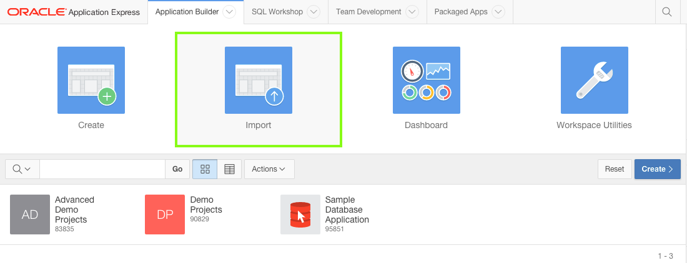
For Import File, click Choose File, where you extracted apex-adv-demo-projects-2848027.zip, open the files folder.
Locate the appropriate Advanced Projects App Export file, and double-click the file or click the file and then click Open.
Verify that the File Type is Database Application, Page or Component Export.
Click Next.
For the File Import Confirmation step, click Next.
For the Install step:
Parsing Schema - verify the schema is correct
Build Status - verify the selection is Run and Build Application
Install As Application - select Change Application Id Note: If you don't want to overwrite your existing application but create a new application, select Auto Assign New Application ID.
New Application - enter the Application Id for your existing application. Note: The New Application text field will only be displayed after the Change Application Id option has been selected.
Click Install Application.
On the Confirm Replace Application step, click Replace Application. Note: If this step doesn't display then you did not enter the existing Application Id on the previous step.
A box with Installing Application ... will be displayed for a short period (< 1 minute).
These Advanced App exports include Supporting Objects. If the tables from the Basic application, such as DEMO_PROJECTS already exist, then only the appropriate additional database objects will be installed.
For Supporting Objects, accept the default for Install Supporting Objects of Yes, and click Next.
Click Install.
A box with Installing Supporting Objects ... will be displayed for a short period (< 1 minute).
The installation of database objects and seed data may succeed or fail, depending on what database objects are already created.
If installation fails, click Install Summary, and review the errors.
The errors should relate to objects already existing, such as ORA-00955: name is already used by an existing object, or inserts failing due to unique constraints being violated.
If installation succeeds, then click Edit Application.
Continue with the appropriate topic!
Appendix B - Migrating your Application Development between Environments
Overview
An application written with Application Express can readily be moved from one environment to another.
It is normal development practice to move an application from development to test to production.
This generally involves exporting the application from development and importing it into the test or production environment.
If the latest development also requires changes to database object structures, such as creating a new table or adding a new column, then a separate Database Definition Language (DDL) script should be written for updating the other environments.
Similarly, if data needs to be manipulated, such as inserting or updating records, then a Data Manipulation Language (DML) script should be written.
Migrating where you do your application development, for example from on-premise to the cloud, is much the same as the steps required for rolling out a new version of your application to test or production.
However, rather than just providing scripts for the deltas between the current production and development environments, you need to create scripts for all of the database objects (DDL) and you need to move all of the data from development into the new environment.
This section covers the steps required to move your development environment from one Oracle Application Express installation to another.
Oracle Database Cloud Service: There are currently three Oracle Database Cloud services available - Database Schema Service, Database as a Service (DBaaS), and Exadata Service.
With the Schema Service you are subscribing to a slice (single schema) of an Oracle Database, which you share with many other tenants.
For the security of all tenants, external access to the service is restricted to RESTful Web Services and Application Express applications.
Oracle SQL Developer 4.0, and above, enables you to define a RESTful connection to your Schema Service.
This connection can be used to easily move database objects and table data from any Oracle Database you can access to the cloud.
However, this RESTful connection can not be used to move data from your Schema Service to an external Oracle Database.
Database as a Service and Exadata Service both provide full access to the underlying Oracle Database.
For security reasons, most ports, such as 1521 which is generally used for database communication, are not accessible.
However, port 22 is available and together with SSH Tunneling can be used to define a connection to the database in your service.
Using SQL Developer 4.0, and above, you can move databse objects and data into or out of your Database as a Service and Exadata Services.
Warning:
You cannot import an application into an earlier release of Application Express.
For example, if you are exporting an application from the Oracle Database Cloud - Schema Service, which is currently Application Express 5.0, you can not import that application into an on-premise installation that is only running Application Express 4.2.
You will need to update the target Application Express environment prior to importing the application.
Check the version of Application Express in both your current development environment and the environment you are migrating to.
In any release of Application Express, check the bottom right corner for the version information.
In Application Express 5.0 and above, you can also click Help and then select About.
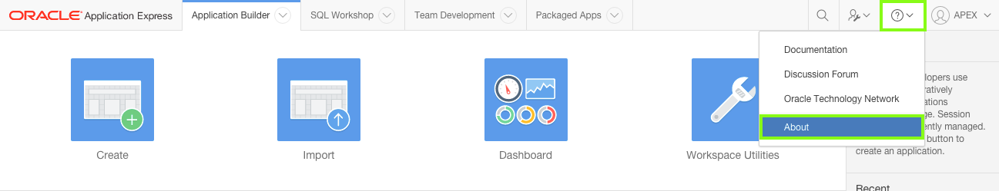
Migration Steps
Up until this point, you may have been developing on a local development instance, and now want to move your development to the Oracle Database Cloud service to continue.
Migrating the environment where you develop your application involves the following:
Exporting the application from the current environment, and importing it into the new environment
Recreating all of the database objects, such as tables, packages and so forth, and then populating the tables with the data from the current environment
Testing the application in the new environment
Migrating the Application
An application written in Application Express is stored as meta-data in the Oracle Database. As you define applications, pages, regions, items, and so forth, the definitions are saved in various tables defined within the Application Express Engine schema. When you export an application a single SQL file is created by extracting the application definitions from the meta-data tables. When importing the application, records are inserted (or updated if overwriting an existing application) into the Application Express meta-data tables, of the environment being imported into. Therefore, once an application is imported, all of the application definitions can be reviewed from the Application Builder, and the application can be run immediatley. However, running the application will produce errors if the required database objects are not available in the workspace.
Note: The export only captures the application definition, and does not export any of the underlying database objects or data that may be associated with the application. Application Express does include the ability to define installation and update scripts within Supporting Objects. However, developers must manually define these scripts. The use of Supporting Objects is not covered in this workshop.
From your current development environment, navigate to the Home Page for your current application.
Click Export / Import.
Click Export.
For Export Preferences set the following:
Export Private Interactive Reports - select Yes
Export with Original IDs - select Yes Note: Exporting with the Original IDs will allow an export from the target environment to be reimported back into this current environment, if necessary at some later date.
Click Export.
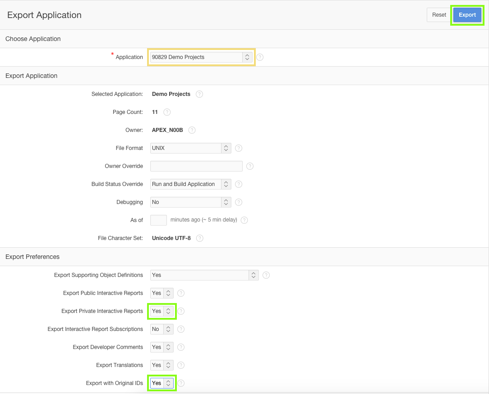
In the Save Dialog, click Save. Note: It is good practice to rename the export file and include a version or date so that subsequent exports do not overwrite previous exports.
Creating a subdirectory, specifically for all of the files required for the migration, makes it easier to locate the files when using them within the target environment.
Log into your target Application Express environment.
Navigate to the Application Builder Home Page.
Note: Some of the labels outlined below may be different based on the browser you are using.
Click Import.
For Import File, click Choose File.
In the operating system File Browser, navigate to the subdirectory where you saved the export file.
Locate the export file, and double-click the file or click the file and then click Open.
Verify that the File Type is Database Application, Page or Component Export
Click Next.
For the File Import Confirmation step, click Next.
For ease of reference it is preferable to keep the same Application Id in the target development environment.
However, this may not be viable, in which case assigning a new application Id will need to be used.
For the Install step, verify the Parsing Schema is correct, and verify the Build Status is Run and Build Application,
For Install As Applications, select Reuse Application ID xxxxx From Export File.
Click Install Application.
Note: The majority of Application Express workspaces are only associated with a single schema. As such the Parsing Schema will not need to be updated as it will default to the only associated schema.
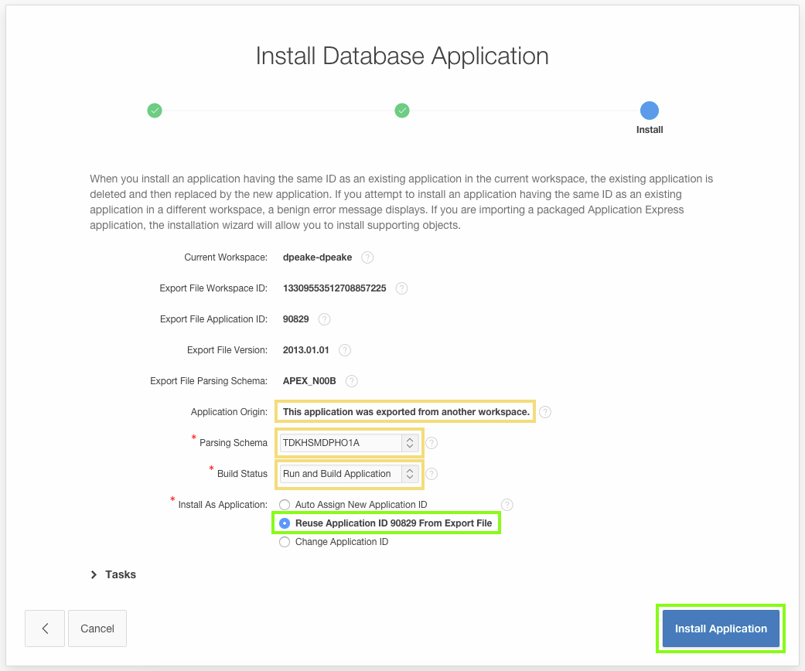
If you are installing into the Orcle Database Cloud - Schema Service then there are restrictions on the ranges for Application Ids.
Return to the previous step and for Install As Application, select Auto Assign New Application ID.
The existing Application Id from your current development environment may already be used by another application in the target environment.
This Application Id may exist in your workspace or another workspace in the same environment.
Return to the previous step and for Install As Application, select Auto Assign New Application ID.
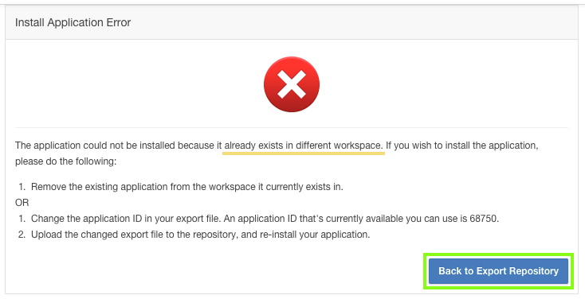
A box with Installing Application ... will be displayed for a short period (< 1 minute).
Once the application has been successfully installed, click Edit Application.
You have installed the application in your target environment. However, until you have imported the database objects (tables) and data, you will get errors when you try and run the application.
Migrating Database Objects and Data
The two primary ways to move the database objects and data from one environment to another, for a single application,
is using either Oracle SQL Developer, or Application Express > SQL Workshop.
Oracle SQL Developer is a free integrated development environment that simplifies the development and management of Oracle Database in both traditional and Cloud deployments.
SQL Developer is familiar to most professional Oracle developers and DBAs, but perhaps not to business developers.
Oracle Application Express includes SQL Workshop which also provides capabilities for managing database objects. SQL Workshop is designed for application developers who do not have direct access to the underlying Oracle Database, such as in hosted environments such as http://apex.oracle.com.
Note: Other techniques are available if moving complete development environments, or whole workspaces. For example, if using Oracle Database 12c Multitenant Option, you may be able to simply move the Pluggable Database (PDB) from one environment to another using Oracle Enterprise Manager 12c. In addition, there are a number of techniques available to move tables with large data volumes between environments.
In order to use SQL Developer you must be able to connect to the Oracle Database schemas for both the development environment and the target environment.
You need to connect to the data schema associated with your workspace.
Once connected to both schemas, it is simply a matter of dropping the required database objects from the current schema into the Cart, where you can also include the table data, and then moving it to the target schema.
To determine your Oracle Database schema name associated with your Application Express workspace, log into Application Express.
Click SQL Workshop, and review the schema name listed.
Determine if you can use SQL Developer, by answering the following questions:
Can you connect to the Oracle Database schema in the current environment?
On-Premise - MAYBE: If you have, or can obtain, database credentials for the current schema from your Oracle Database Administrator
apex.oracle.com - NO: SQL access is not provided for this public facing service
Oracle Database Cloud Service - Database as a Service (DBaaS) / Exadata Service - YES: The required credentials are provided
Oracle Database Cloud Service - Database Schema Service - NO: Although you can connect to this services using SQL Developer, you can not use the Cart feature to move objects out of the cloud environment
Local Install - YES: If you have installed the Oracle Database directly on to your laptop or desktop, you should be able to determine, or reset the
Oracle Database Cloud Service - Databas as a Service (DBaaS) / Exadata Service - YES: Although you can connect to these services using SQL Developer, you can not use the Cart feature to move objects out of the cloud environment
Public Hosting Service - MAYBE: If you have, or can obtain, database credentials for the current schema from your Hosting Provider
Can you connect to the Oracle Database schema in the target environment?
On-Premise - MAYBE: If you have, or can obtain, database credentials for the target schema from your Oracle Database Administrator
apex.oracle.com - NO: SQL access is not provided for this public facing service
Oracle Database Cloud Service - YES: SQL Developer can be connected and used to move data into these cloud environments
Local Install - YES: If you have installed the Oracle Database directly on to your laptop or desktop, you should be able to determine, or reset the password for the data schema associated with your workspace.
Public Hosting Service - MAYBE: If you have, or can obtain, database credentials for the target schema from your Hosting Provider
Note:Oracle Database Cloud Service currently includes three distinct services - Database Schema Service, Database as a Service (DBaaS), and Exadata Service.
If you answered "YES" to both questions above, then follow the steps outlined in B-1 : Migrating using SQL Developer.
If you could not answer both questions "YES", then follow the steps outlined in B-2 : Migrating using Application Express Only.
B-1 : Migrating using SQL Developer
Connecting to SQL Developer
If SQL Developer is not currently installed on your computer, download the latest version from Oracle Technology Network (OTN) here.
You will need to define two connections - one to the current and one to the target Oracle Database schemas, associated with your Application Express workspaces.
If you are connecting SQL Developer to an On-Premise, local install, or Public Hosting Service, then start SQL Developer.
Click Add (New Connection) and enter the following:
Connection Name - enter a meaningful name for the schema
Username - enter the schema name associated with the Application Express workspace
Password - enter the password for the schema
Check Save Password
Hostname - enter the appropraite Hostname for your environment
Port - enter the appropriate port for your environment (normally 1521)
SID / Service Name - enter either the SID or Service Name for your environment
Click Test to ensure your connection details are correct.
Click Save.
If you are connecting SQL Developer to the Oracle Database Cloud - Database Schema Service then following this documentation: Using Oracle Database Cloud - Database Schema Service > ... > Configuring Oracle SQL Developer Cloud Connection
and Using Oracle Database Cloud - Database Schema Service > ... > Setting Up Secure FTP Account. Warning: You must be using SQL Developer 4.0 or above. The instructions in the lab are based on SQL Developer 4.1. Note: With Database Schema Service you get a slice (schema) of a fully managed Oracle Database running on Exadata.
However, you do not have access to the operating system or direct access to the underlying Oracle Database.
For this reason, connection to this service is via RESTful Web services over HTTPS.
You will create a connection using the Service SFTP User Name details.
If you are connecting SQL Developer to the Oracle Database Cloud - Database as a Service (DBaaS) / Exadata Service then following this lab: Oracle Database Cloud Service - Advanced Hands On Labs: Lab 2. Warning: You must be using SQL Developer 4.0 or above. The instructions in the lab are based on SQL Developer 4.1. Note: With DBaaS and Exadata Service you have access to the entire database, with root, and DBA level access.
However, as this service is available over the Internet, not all ports are open, including port 1521.
Port 1521 is the default port the database listener services connection request with.
For this reason, connection to these services is via SSH Tunneling, using port 22 which is open.
You will create a connection on port 22 of the DBaaS / Exadata Service virtual machine running your database.
The SSH Tunneling then forwards the traffic from SQL Developer to port 1521 on the same virtual machine.
If your target Oracle Database Schema is Oracle Database Cloud - Database as a Service (DBaaS) / Exadata Service, then follow this documentation: SQL Developer User's Guide > 1. SQL Developer Concepts and Usage > 1.15 Using the Cart. Note: Becuase you have a standard connection to your cloud service, via SSH Tunneling, then you follow the SQL Developer documentation.
The documentation for the Database Schema Service is specific to that service, as it utilizes the Secure FTP server to transfer the files.
You need to load the following database objects into the SQL Developer Cart:
Table DEMO_MILESTONES - Including data
Table DEMO_PROJECTS - Including data
Table DEMO_TASKS - Including data
Table DEMO_TEAM_MEMBERS - Including data
Trigger BIU_DEMO_MILESTONES
Trigger BIU_DEMO_PROJECTS
Trigger BIU_DEMO_TASKS
Trigger BIU_DEMO_TEAM_MEMBERS
Note: You do not need to include the package DEMO_PROJECTS_DATA_PKG as the data will be included in the SQL Developer cart.
B-2 : Migrating using Application Express Only
The SQL Workshop within Application Express provides all of the tools required for migrating database objects and data.
However, you will need to perform more steps to accomplish this task than simply using the SQL Developer Cart, and dragging and dropping database objects.
Preparing the Database Objects and Data Files
Log into your current Application Express development environment.
Use SQL Workshop to create a script file, for creating the table definitions.
Click SQL Workshop.
Click Utilities.
Locate Generate DDL. Click Generate DDL.
Click Create Script.
Verify the Schema name is correct, and click Next.
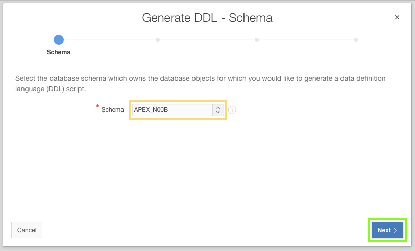
For Output select Save As Script File, and for Object Type check Table.
Click Next.
Select the following tables:
DEMO_MILESTONES
DEMO_PROJECTS
DEMO_TASKS
DEMO_TEAM_MEMBERS
Click Generate DDL.
For Script Name, enter a meaningful name. Optionally enter a description.
Click Create Script.
After a short wait, generally less than a minute, you will be returned to SQL Scripts.
You will see the scripts that were uploaded earlier, then the page will refresh and will show the new script just created.
Click the Edit icon (pencil) on the recently created script.
Click Download.
Click Save.
Use SQL Workshop to create a script file, for creating the trigger definitions.
Click SQL Workshop.
Click Utilities.
Locate Generate DDL. Click Generate DDL.
Click Create Script.
Verify the Schema name is correct, and click Next.
For Output select Save As Script File, and for Object Type check Trigger.
Click Next.
Select the following triggers:
BIU_DEMO_MILESTONES
BIU_DEMO_PROJECTS
BIU_DEMO_TASKS
BIU_DEMO_TEAM_MEMBERS
Click Generate DDL.
For Script Name, enter a meaningful name. Optionally enter a description.
Click Create Script.
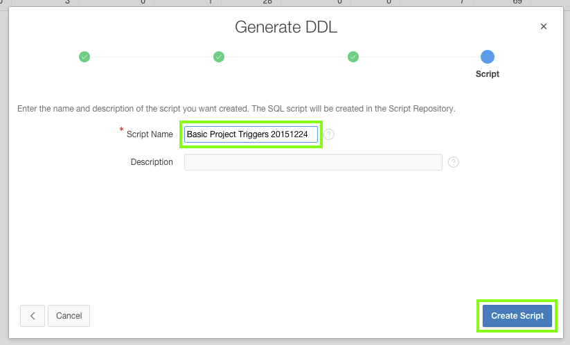
After a short wait, generally less than a minute, you will be returned to SQL Scripts.
You will see the scripts that were uploaded earlier, then the page will refresh and will show the new script just created.
Click the Edit icon (pencil) on the recently created script.
Click Download.
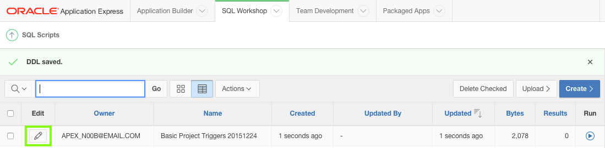
Click Save.
Use SQL Workshop to create XML files for your data.
In the Application Express main toolbar, click the SQL Workshop down arrow ( ↓ ), select Utilities and then select Data Workshop.
Under Data Unload locate to XML. Click to XML.
Verify the value for Table Owner is the correct schema.
For Table select DEMO_MILESTONES.
For Columns click on ID, hold down the Ctrl key, and then click on UPDATED_BY, such that all of the columns are selected.
Click Unload Data.
For Save As enter a meaningful name.
Click Save.
After saving the file you will be returned to the Unload to XML - Columns dialog.
For Table select DEMO_PROJECTS.
For Columns click on ID, hold down the Ctrl key, and then click on UPDATED_BY, such that all of the columns are selected.
Click Unload Data.
For Table select DEMO_TASKS.
For Columns click on ID, hold down the Ctrl key, and then click on UPDATED_BY, such that all of the columns are selected.
Click Unload Data. Note: You will need to scroll down in the list of columns to see the UPDATED_BY column.
For Table select DEMO_TEAM_MEMBERS.
For Columns click on ID, hold down the Ctrl key, and then click on UPDATED_BY, such that all of the columns are selected.
Click Unload Data. Note: You will need to scroll down in the list of columns to see the UPDATED_BY column.
Click Cancel, to exit the dialog.
Recreating the Database Objects and Migrating the Data
Log into your target Application Express development environment.
Use SQL Workshop to load and run the script file, for creating the table and trigger definitions.
Click SQL Workshop.
Click SQL Scripts.
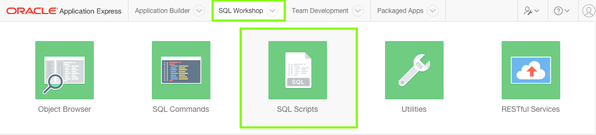
Upload the script to create the tabes first.
Click Upload.
For File, click Choose File.
In the operating system File Browser, navigate to the subdirectory where you saved the table script file.
Locate the table script file, and double-click the file or click the file and then click Open.
Click Upload.
Click the Run icon to the right of the script you uploaded.
Click Run Now.
Click the View Results icon for the script you just ran.
At the bottom of the results page you should see "9" Statements Processed, "9" Successful, and "0" With Errors.
Upload the script to create the triggers.
Click Upload.
For File, click Choose File.
In the operating system File Browser, navigate to the subdirectory where you saved the table script file.
Locate the table script file, and double-click the file or click the file and then click Open.
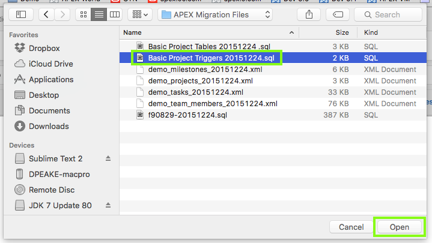
Click Upload.
Click the Run icon to the right of the script you uploaded.
Click Run Now.
Click the View Results icon for the script you just ran.
At the bottom of the results page you should see "8" Statements Processed, "8" Successful, and "0" With Errors.
Currently the tables you created do not have any data. Use the XML files you created to populate the tables.
Note: The order in which the tables are populated is crucial, to ensure referential integrity does not prevent records loading.
For example, loading any records into DEMO_PROJECTS before loading the records into DEMO_TEAM_MEMBERS will fail, as the ASSIGNEE column in DEMO_PROJECTS must correspond to an existing record in DEMO_TEAM_MEMBERS.
In the Application Express main toolbar, click the SQL Workshop Down Arrow ( ↓ ), select Utilities and then select Data Workshop.
Under Data Load, locate XML Data. Click XML Data.
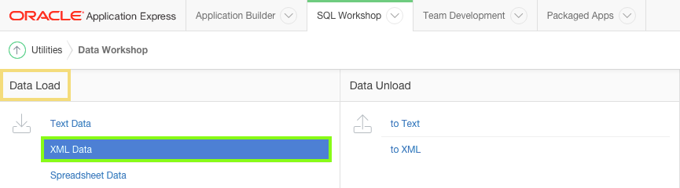
Verify the value for Schema is correct.
For Table, select DEMO_TEAM_MEMBERS.
For File, click Choose File, locate the file for DEMO_TEAM_MEMBERS, and double-click the file or click the file and then click Open.
Click Load Data.
Under Data Load, click XML Data.
For Table, select DEMO_PROJECTS.
For File, click Choose File, locate the file for DEMO_PROJECTS, and double-click the file or click the file and then click Open.
Under Data Load, click XML Data.
For Table, select DEMO_MILESTONES.
For File, click Choose File, locate the file for DEMO_MILESTONES, and double-click the file or click the file and then click Open.
Under Data Load, click XML Data.
For Table, select DEMO_TASKS.
For File, click Choose File, locate the file for DEMO_TASKS, and double-click the file or click the file and then click Open.
Review the tables in SQL Workshop > Object Browser to ensure the data has loaded successfully in all four tables.
Test the Migrated Application
The target development environment should now have everything you need to continue developing the application.
Note: Before running the application, especially if you are using an Oracle Database Cloud Service, you may need to create a runtime user.
In the main Application Express Toolbar, click Administration (on the right), and select Manage Users and Groups.
Click Create User, enter the same username you use in the current development environment.
In the Application Builder Home Page, click the Run icon for the Demo Projects application. Note: If the My Outstanding Tasks report has no data in your target environment, this is caused by logging into the runtime application with a different username to the one used in your current development environment. Go to Administration and create a new user.
To navigate this Oracle by Example tutorial, note the following:
Topic List:
Click a topic to navigate to that section.
Expand All Topics:
Click the button to show or hide the details for the sections. By
default, all topics are collapsed.
Hide All Images:
Click the button to show or hide the screenshots. By default, all
images are displayed.
Print:
Click the button to print the content. The content that is
currently displayed or hidden is printed.
To navigate to a particular section in this tutorial, select the
topic from the list.